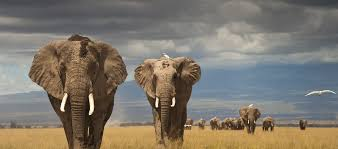

My name is RITA WOKI.I was born and raised in Kikuyu
in a family of two.I went to P.C.E.A Kimuri primary school where i graduated and later joined Green Valley Int' high school.
After there i went to a school where i learnt how to
play a guitar,
before preceding to college where i majored in accounts although i took a break,
and joined Moringa school where am currently learnig how to code.
I like sports especially football, i do play at times when at home.
Music is part of my life,it really motivates me among other things.
my favorite song is "you've won the victory" by Anthem Full Gospel.
learning new things mostly the positive ones is part of my interest.

Travelling is also a part of what i like especially on holidays.
I love pilau with green piece stew and also fried pork.
i do love frozen yogurt i have to take it like every weekends or whenever i come across it.
I can't do without reading the bible every day.Also listening to some nice, cool and slow music. My favorite verse is Jeremiah:33:3
The best way to predict the future is to create it.
you can reach me at;